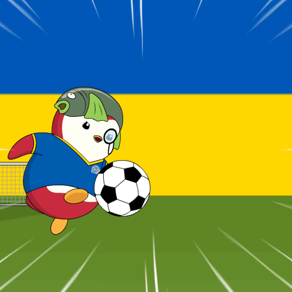

About Us – Welcome to Football Club

Who We Are
Football Club is a vibrant community of passionate football enthusiasts united
by a shared love for the beautiful game. Founded in 2015,
we have grown from a small group of friends into a thriving club with members
from all ages and backgrounds.Our mission is simple: to create a welcoming space
where everyone can enjoy football, develop their skills,and build lasting friendships.
What We Do
We organise regular training sessions, friendly matches,
tournaments, and social gatherings that cater to both beginners
and experienced players. Whether you want to improve your technique,
learn tactics, or simply have fun on the pitch,
we have activities designed for you.
We also host viewing parties for major matches and community outreach events
to promote the sport.
Our Values
- Inclusivity – Football is for everyone.
We welcome players of all skill levels, genders, and ages.
- Excellence – We push each other to improve, both individually and as a team.
- Community – We are more than a club; we are a family.
We celebrate victories together and support each other through defeats.
Why Join Us?
Members enjoy access to exclusive training,
expert coaching, and a network of fellow fans and players.
More importantly, you become part of a supportive community that shares your passion.
Whether you dream of playing competitively or just want to kick a ball with friends,
you’ll find your place here.
Join the Journey
Check out our Events page for upcoming fixtures and activities,
or visit Contact to get in touch.
Follow us on social media to stay updated. We can’t wait to see you on the pitch!
Back